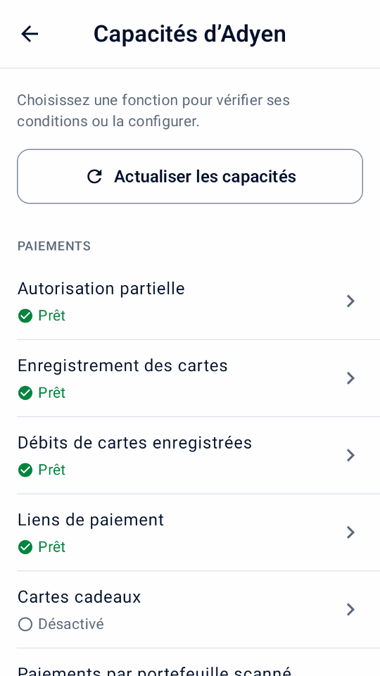
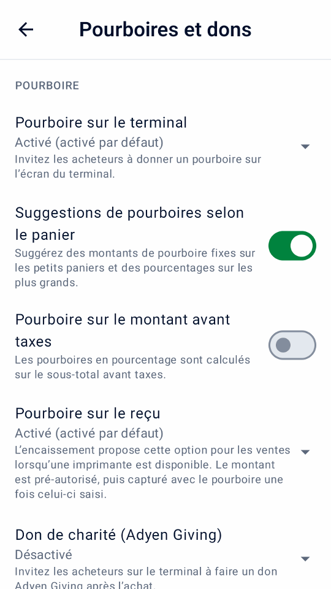
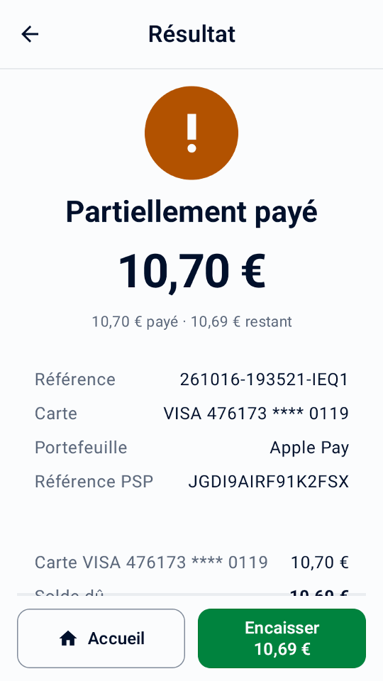
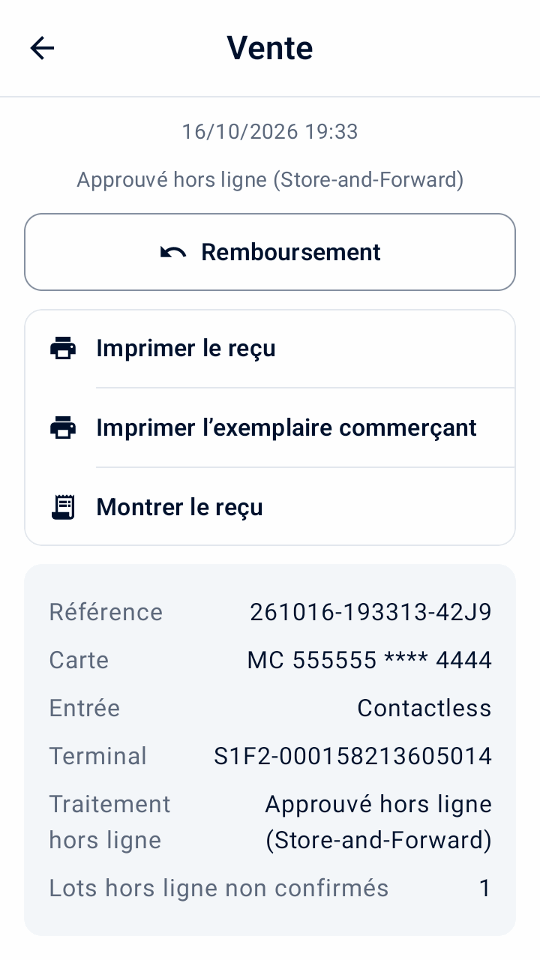
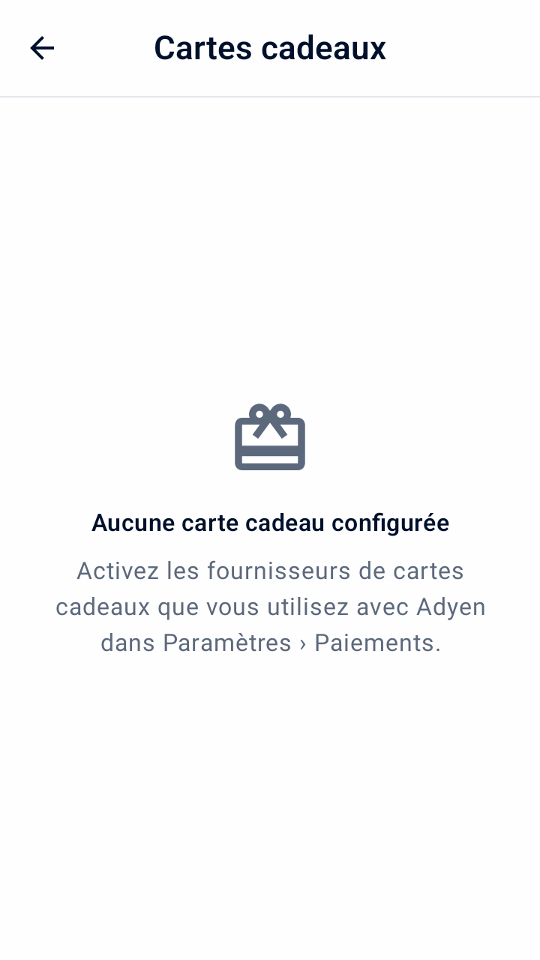

Guide
Options de paiement
Ajoutez les fonctions utiles à votre activité. Vérifiez leur disponibilité, terminez la configuration Adyen et testez chaque fonction avant son utilisation en LIVE.
Vérifier et configurer les fonctionnalités d'Adyen
Ouvrez Paramètres › Capacités d’Adyen après avoir connecté votre destination. Ce centre regroupe les fonctions de paiement et de terminal Adyen, pas les outils locaux ni le PIN responsable. Les groupes sont Paiements, Pourboires et interaction, Reçus et lecture de codes et Terminal et récupération.
Chaque fonction affiche Prêt, Configuré sur Adyen, Désactivé, À configurer ou Non vérifié sous son nom. Les fonctions Non pris en charge sont dans une liste repliée en bas. Ces indicateurs ne garantissent pas l'approbation pour un compte marchand, une carte ou un moyen de paiement. Si les paiements ne sont pas configurés, l'écran propose d'abord de terminer leur configuration.
Désactivé · configuré sur Adyen signifie qu’Adyen a déjà configuré la fonction pour le terminal ou le magasin, comme des options de pourboire, MOTO ou un type de carte cadeau ; activez son réglage local dans Mini mPOS pour l’utiliser.
- Touchez Actualiser les capacités pour lire les paramètres du terminal sélectionné. La lecture réelle nécessite les rôles Management API du Démarrage rapide.
- Choisissez une fonction pour afficher ses exigences et ses paramètres.
- Sur un terminal compatible, modifiez les pourboires, DCC, MOTO ou limites hors ligne dans leur fonction. Saisissez les montants dans la devise habituelle et choisissez Utiliser la limite héritée pour retirer une limite personnalisée. Chaque suggestion de pourboire a sa propre ligne validée.
- Appuyez sur Enregistrer sur Adyen.
Un enregistrement au résultat inconnu n'est pas réessayé automatiquement. Actualisez avec succès et vérifiez les valeurs Adyen avant de décider. L'enregistrement et la relecture confirment les paramètres chez Adyen, pas leur application sur le terminal. Un téléchargement et un redémarrage peuvent rester nécessaires ; voir les mises à jour de configuration des terminaux Adyen.
Tap to Pay n’offre pas les fonctions de terminal physique comme le pourboire sur le terminal, l’écran client, MOTO/MKE, les paiements hors ligne ou le rapprochement du terminal. Pour l’activation du compte et les exigences des moyens de paiement, suivez la documentation Adyen sur les paiements en personne.


Choisir comment recueillir les pourboires
Le pourboire sur le terminal est choisi avant le débit de la carte. Le pourboire sur reçu bloque le montant jusqu’à la saisie du pourboire par le personnel et sa capture. Consultez les conditions de chaque méthode ci-dessous.
Récupérez un pourboire sur le terminal
- Vérifiez les pourboires sur le terminal dans Capacités d'Adyen. Définissez les options de pourboire prédéfinies et personnalisées du terminal pour la devise de paiement si nécessaire.
- Dans Paramètres › Pourboires et dons, activez Pourboire sur le terminal et choisissez sa valeur par défaut de paiement. Activer éventuellement Suggestions de pourboires selon le panier pour des montants fixes sur les petits paniers et des pourcentages sur les plus grands, ou Pourboire sur le montant avant taxes. Ces deux options nécessitent le logiciel du terminal 1.101 ou ultérieur, vérifié par un test de connexion.
- À l’encaissement d’une vente, sélectionnez Pourboire sur le terminal et appuyez sur Payer. Le client choisit un pourboire avant que la carte ne soit débitée. Vérifiez le total retourné et le pourboire et remettez le reçu.
Cela ne nécessite pas d’imprimante ni d’entrée de pourboire ultérieure. Pourboires sur le terminal et pourboires sur le reçu ne peuvent pas être sélectionnés ensemble. Ni l'un ni l'autre n'est proposé pour les préautorisations, les paiements par portefeuille numérisé ou les liens de paiement ; les pourboires sur le terminal ne sont pas proposés avec Tap to Pay.


Récupérez un pourboire inscrit sur le reçu
Conditions préalables
- Un terminal avec une imprimante
- Pré-autorisation et surcapture activées par le support Adyen ; voir le Guide des pourboires sur reçu Adyen
Dans Paramètres › Pourboires et dons, choisissez Activé (désactivé par défaut) ou Activé (activé par défaut) pour définir la façon dont le commutateur de paiement démarre. Désactivé, la valeur par défaut, le cache. Certaines cartes de débit et portefeuilles ne prennent pas en charge ce flux.
- À la caisse d'une vente, activez Pourboire sur le reçu et appuyez sur Payer. Le montant de l’addition est réservé, sans être débité.
- Imprimez le reçu. Il comporte des lignes de pourboire et de total vierges, et la copie du commerçant comporte une ligne de signature.
- Lorsque le client l’a rempli, appuyez sur Entrez le pourboire sur le résultat ou utilisez le filtre En attente de pourboire dans l’Historique.
- Saisissez le pourboire ou le total, ou appuyez sur Pas de pourboire, et confirmez.
L’application capture le montant de l’addition et le pourboire. Pour les pourboires supérieurs à 20 %, l'émetteur de la carte doit d'abord augmenter la retenue ; s'il refuse, entrez un pourboire plus petit ou aucun. Un pourboire enregistré ne peut pas être modifié. Avant de saisir un pourboire, annulez le paiement au lieu de le rembourser ; par la suite, les remboursements incluent le pourboire.
Avertissement
Saisissez rapidement chaque pourboire, y compris zéro pourboire, afin que les factures soient capturées avant l'expiration de leur retenue. Pour les captures échouées ou inconnues, voir capturer les problèmes.
Conserver et récupérer un dépôt
Conditions préalables
- Préautorisation activée par le support Adyen pour vos méthodes de paiement ; voir le Guide de préautorisation Adyen
Une préautorisation permet de conserver un montant sur la carte sans le débiter. L'ensemble de votre compte n'a pas besoin d'être capturé manuellement ; Mini mPOS le demande uniquement pour ces paiements.
- Sur Accueil, appuyez sur Nouvelle pré-autorisation. Choisissez un produit en préautorisation, scannez son code-barres ou saisissez un montant. Chaque préautorisation comporte un élément.
- Au moment du paiement, appuyez sur Pré-autoriser. Le reçu indique le montant détenu.
- Lorsque vous êtes prêt, ouvrez l'entrée dans Historique et choisissez une action :
- Capturer
- Encaisse le montant dû. Un montant inférieur libère le reste ; un montant plus élevé demande d'abord à l'émetteur de la carte d'augmenter la retenue. Les remboursements sont possibles une fois la capture demandée.
- Ajuster le montant
- Modifie le montant détenu sans le facturer. La présentation du même montant renouvelle l’autorisation.
- Annuler la préautorisation
- Libère la prise. Si le paiement a déjà été enregistré dans le Customer Area, Adyen le rembourse intégralement.
Capture demandée n'est pas une confirmation définitive ; vérifiez le Customer Area. Pour des réponses immédiates aux ajustements, activez Renvoyer les données d'autorisation d'ajustement comme décrit dans le Guide de réglage des autorisations Adyen.
Avertissement
Les retenues expirent. Vérifiez quotidiennement le filtre de préautorisation et capturez ou annulez rapidement. Pour les opérations ayant échoué ou inconnues, voir capturer les problèmes.
Utilisez des workflows de paiement facultatifs
Activez dans les Paramètres uniquement les options d’encaissement nécessaires. Hormis l’autorisation partielle, le partage et les suppléments, ces parcours exigent un terminal physique compatible, pas Tap to Pay. Vérifiez les capacités d’Adyen et testez d’abord votre configuration réelle. La plupart des options ne peuvent pas être combinées dans un paiement ; l’encaissement explique le conflit et vous demande d’en désactiver une.
Accepter des paiements avec guidage audio
Activez d’abord Activer le guidage audio dans Paramètres › Paiements › Accessibilité, une fois que le support Adyen l’a activé pour vos terminaux, qu’ils utilisent un logiciel compatible et que leur langue n’est pas l’estonien, le letton, l’islandais ou le lituanien. Il est disponible sur AMS1, S1F2, S1F2L, S1E2L et S1U2 avec le logiciel 1.117 ou ultérieur, et sur M450, P630 et SFO1 avec 1.124 ou ultérieur. Voir les exigences d’Adyen pour les paiements accessibles.
À l’encaissement, activez Guidage audio pour l’acheteur qui en a besoin et désactivez les pourboires, Giving et la saisie manuelle. Utilisez une carte sans signature. Le paiement demande le montant total et ignore les invites de l’écran client.
Le terminal lit les instructions à voix haute ; laissez du temps à l’acheteur. Mini mPOS attend jusqu’à dix minutes le résultat. Si aucune réponse n’arrive, vérifiez le résultat inconnu avant un autre paiement. Le choix est réinitialisé après chaque tentative.
Suppléments
Adyen ajoute les suppléments que vous configurez chez Adyen ; Mini mPOS ne les définit pas. Quand Adyen en indique un, l’historique, les reçus et le rapport quotidien le présentent séparément des achats et des pourboires ; le total débité l’inclut déjà. Un supplément non indiqué reste inconnu. Si une autorisation partielle n’indique pas le supplément, vérifiez le Customer Area ou remboursez la carte d’origine avant de recommencer.
Annoncez le supplément avant le paiement, surtout avec Tap to Pay, qui n’a pas d’écran de confirmation du supplément. Ne combinez pas suppléments et DCC. Mini mPOS bloque les ajustements et captures au-delà de la réservation d’origine lorsqu’un supplément a été indiqué. Voir les exigences d’Adyen sur les suppléments et la configuration des suppléments d’Adyen.
Paiements échelonnés au Mexique
Confirmez avec Adyen vos programmes émetteurs et vos frais, activez le paiement échelonné dans Paramètres › Paiements et actualisez les capacités d’Adyen pour vérifier le magasin mexicain. À l’encaissement, choisissez débit, crédit en une fois ou 3, 6, 9, 12 ou 18 mensualités, et payez toute la vente avec une carte éligible. Les liens de paiement, jetons, portefeuilles scannés et cartes cadeaux ne transmettent pas le plan.
Les détails, l’historique et les reçus indiquent le plan demandé et le plan renvoyé. Un émetteur non pris en charge peut refuser. Remboursez le paiement d’origine par montant ou en totalité ; l’émetteur gère l’échéancier.
Adyen: Paiements échelonnés au Mexique
Encaisser un paiement partiellement autorisé
Activez Autoriser les autorisations partielles pour accepter une approbation inférieure au montant demandé. Lorsque le résultat indique Partiellement payé, vérifiez les montants payé et restant, puis touchez Encaisser à côté d’Accueil. Choisissez comment encaisser le solde sur la même vente. Ne recommencez pas une vente pour le total : la partie approuvée est déjà payée.
Une réponse manquante n’est pas une approbation partielle. Résolvez les résultats inconnus avant d’encaisser davantage.


Partager une vente ou encaisser en espèces
À la caisse, touchez Autres options de paiement. Choisissez Espèces pour encaisser tout le solde, ou Partager le paiement pour choisir un montant, des parts égales ou des articles, puis Payer ou Espèces. Les prix et taxes restent inchangés ; les centimes restants vont aux premières parts. Le montant reçu commence au montant dû ; la saisie le remplace. Montant exact le rétablit. Vérifiez les espèces reçues et la monnaie, rendez la monnaie, puis confirmez. Les espèces sont enregistrées uniquement sur cet appareil.
La vente reste Partiellement payée jusqu’au paiement complet. Touchez Encaisser sur le résultat ou Encaisser le solde dans Historique pour continuer, même après un redémarrage. La part égale suivante est sélectionnée automatiquement. Résolvez tout résultat de carte inconnu avant d’encaisser davantage. Le reçu liste tous les paiements ; le rapport quotidien sépare les espèces, absentes des totaux du terminal.
Avec des cartes cadeaux configurées, touchez Carte cadeau pour payer le montant choisi avec l’une d’elles ; un solde insuffisant est approuvé en partie. Les paiements par carte cadeau sont remboursés sur la carte, sauf les cartes cadeaux locales, remboursées en dehors de Mini mPOS.


Démos du simulateur en français d’une vente partagée.
Retrait avec achat
Après confirmation par Adyen de votre magasin et de votre programme de cartes, activez Retrait avec achat dans Paramètres › Paiements, définissez une limite d’espèces et un PIN responsable. À l’encaissement, saisissez les espèces supplémentaires demandées et payez toute la vente avec une carte éligible. Un achat peut être approuvé alors que son retrait est refusé ; ne remettez que les espèces approuvées.
Retrait d’espèces
Retrait d’espèces, sur l’accueil, demande des espèces sans achat. Activez-le séparément après qu’Adyen a confirmé le retrait d’espèces eftpos australien pour le magasin.
Après approbation, vérifiez les espèces approuvées et le débit de la carte. Ne remettez que les espèces approuvées, puis touchez Enregistrer la remise d’espèces et approuvez avec le PIN responsable. Ne remettez jamais d’espèces dont le montant n’est pas indiqué, et vérifiez un résultat inconnu au lieu de redemander des espèces. L’historique conserve les remises non enregistrées ; les rapports quotidiens présentent les espèces approuvées et remises séparément des ventes. Les remboursements ne rendent jamais les espèces remises.
Accepter les titres-restaurant
Activez Titres-restaurant dans Paramètres › Paiements seulement après avoir signé les contrats émetteurs, enregistré votre magasin et obtenu l’activation par Adyen. Le pays vérifié du magasin du terminal détermine les titres acceptés : titres PAT au Brésil ; titres Mastercard ou Visa en Belgique, Finlande, Allemagne, Luxembourg et Espagne ; ou titres-restaurant en France. Actualisez les capacités d’Adyen après la configuration. Monizze, Pluxee Belgique et Lunch Check ne sont pas proposés.
Lorsque les titres exigent des produits éligibles, ouvrez chaque produit dans Paramètres › Produits et activez Éligible aux titres-restaurant ; les articles personnalisés ne le sont jamais. À l’encaissement, touchez Autres options de paiement › Partager le paiement, puis Titre-restaurant. Mini mPOS propose le maximum que le titre peut payer ; encaissez le reste par carte ou en espèces. Les titres Mastercard ou Visa peuvent être approuvés en partie. Les titres-restaurant acceptent au plus 25 EUR par jour, jamais le dimanche ni les jours fériés, et ne peuvent pas être remboursés : proposez un avoir. Un titre brésilien au solde insuffisant est refusé ; saisissez un montant inférieur.
Au Brésil, activez Choisir les titres brésiliens dans l’app pour demander un paiement par titre depuis Mini mPOS. La sélection dans l’app nécessite le logiciel du terminal 1.129 ou ultérieur, vérifié par un test de connexion. Laissez-le désactivé si le support Adyen a activé l’écran crédit, débit ou titre du terminal ; encaissez alors par carte et l’acheteur choisit sur le terminal. Les retours de titres reviennent sur le titre d’origine, jamais en espèces.
Adyen : titres-restaurant au Brésil · Adyen : titres-restaurant en Europe
Utilisez l'écran du terminal destiné aux acheteurs
Avec un terminal réseau/cloud séparé, ouvrez Paramètres › Affichage du terminal pour le client. Choisissez d’afficher les articles avant le paiement, de demander au client de confirmer la commande ou de saisir son adresse e-mail si elle manque au paiement. Configurez d’abord les reçus par e-mail. Le reçu est envoyé automatiquement si Envoyez automatiquement le reçu par e-mail est activé. Après approbation, vous pouvez afficher un code QR et demander une note de 0 à 10 ; la note reçue apparaît dans les détails de la transaction.
Ces invites utilisent la langue de l’application. Elles ne sont pas proposées lorsque Mini mPOS fonctionne sur le terminal de paiement lui-même. Le QR code contient la référence marchand, pas un reçu ; remettez quand même le reçu.
Invitez un don de charité
Après avoir organisé Adyen Giving avec Adyen, activez Don de charité (Adyen Giving) dans Paramètres › Pourboires et dons. Lors du règlement des ventes, sélectionnez-le pour inviter un don sur le terminal après paiement. Il n’est pas proposé pour les préautorisations ou les retenues de reçus.
L'achat et le don sont distincts. Le montant du don déclaré apparaît dans les détails de la transaction ; un achat approuvé à lui seul ne confirme pas un don.
Acceptez un paiement MOTO ou une saisie manuelle de la carte
- Vérifiez auprès d'Adyen que votre terminal et votre compte autorisent le mode de saisie requis. Configurez MOTO dans Capacités d'Adyen en cas de besoin, et définissez les PIN du personnel sous Codes PIN du personnel.
- Dans Paramètres › Paiements, activez l'option MOTO ou Saisie manuelle de la carte. À la caisse, sélectionnez Commande par courrier/téléphone (MOTO) pour une commande à distance, ou Saisie manuelle de la carte (MKE) lorsque la lecture par puce ou sans contact échoue. Un seul peut être sélectionné.
- Touchez Payer, lisez l’avertissement sur la responsabilité en cas de fraude et de rétrofacturation, et effectuez l’approbation du responsable si elle est demandée.
Les transactions saisies manuellement entraînent une responsabilité accrue du commerçant en cas de fraude et de rétrofacturation.
Reconnaître les paiements hors ligne et les lots en attente
Les modes EMV et Store-and-Forward hors ligne nécessitent un terminal pris en charge atteint localement : Mini mPOS sur ce terminal ou un terminal sur votre réseau. Ils ne sont pas proposés via le routage cloud ou Tap to Pay. Organisez le traitement hors ligne avec Adyen et examinez ses risques avant de fixer des limites dans Capacités d'Adyen; Mini mPOS ne met pas lui-même les paiements en file d'attente et ne rend pas un terminal accessible lorsque votre réseau local est en panne.
L'historique marque les ventes hors ligne signalées. Ouvrez une vente pour voir Traitement hors ligne, qu'il ait utilisé EMV hors ligne ou Store-and-Forward, et tout Lots hors ligne non confirmés signalé par le terminal. Une approbation hors ligne ne peut pas encore avoir de référence PSP. Il ne s'agit pas d'un résultat inconnu, mais cela ne confirme pas qu'Adyen a reçu ou réglé le paiement.
Restaurez la connexion du terminal à Adyen et vérifiez les paiements téléchargés et les résultats finaux dans le Customer Area. Vérifiez les avertissements hors ligne et de lots non confirmés pendant rapprochement des terminaux; les totaux correspondants ne confirment pas le règlement hors ligne. Si aucune réponse de paiement concluante n'est arrivée, suivez récupération à résultat inconnu au lieu d'assumer une approbation hors ligne ou de facturer à nouveau.


Scanner le code d'un portefeuille d'acheteur
Utilisez Scanner le portefeuille lors du paiement des soldes pour lire un code de paiement provenant de l'application de portefeuille de l'acheteur. Ceci est différent de la numérisation d’un code-barres de produit ou d’un reçu de remboursement. Il fonctionne avec un terminal de paiement physique, et non avec Tap to Pay ; La découverte du portefeuille nécessite un rôle de lecture.
- Vérifiez les champs de total et de paiement, puis appuyez sur Scanner le portefeuille. Si le pourboire sur reçu est sélectionné, confirmez le paiement sans ce pourboire : le portefeuille facture le total immédiatement, et non une pré-autorisation.
- Choisissez le portefeuille de l'acheteur. Un seul portefeuille disponible est sélectionné automatiquement. Seuls les portefeuilles configurés individuellement apparaissent ; Alipay+ n'implique pas d'options distinctes GCash, DANA, Kakao Pay ou TrueMoney.
- Sur un terminal confirmé équipé d'un scanner, appuyez sur son bouton de numérisation. Il peut s'agir du terminal réseau/cloud, et non de l'appareil exécutant Mini mPOS. Pour numériser avec l'appareil photo de l'appareil, appuyez sur Utiliser l’appareil photo.
- Scannez le code de paiement QR ou le code-barres de paiement de l'acheteur. Un scan valide démarre le paiement immédiatement. Attendez le résultat normal du paiement et remettez son reçu.
Annuler conserve le panier. Un scan sur le terminal s’arrête après 30 secondes ; utilisez Scannez à nouveau ou l’appareil photo. Certains portefeuilles ne prennent pas en charge Enregistrer la carte ; un paiement approuvé sans jeton enregistré reste approuvé. Résolvez les problèmes de portefeuille et ne remplacez jamais un paiement inconnu par un nouveau scan.
Confirmez la configuration de votre portefeuille et testez le comportement avec le Guide du portefeuille Adyen et Guide Adyen PayPal et Venmo.


Démonstrations de simulation en français de numérisation de portefeuille.
Utilisez des références et enregistrer des cartes
- Référence marchand
- Pour enregistrer un numéro de réservation ou de commande, activez Paramètres › Paiements › Demandez une référence marchand. Le numéro identifie le paiement dans Adyen. Si laissé vide, une référence unique est générée.
- Référence acheteur
- Dans Paramètres › Paiements, choisissez le Référence acheteur: une référence client saisie lors du paiement (par défaut), l'e-mail du client, ou aucune. Il est envoyé à Adyen avec chaque paiement. Les références de courrier électronique sont hachées par défaut ; utilisez le même sel sur chaque appareil.
- Cartes enregistrées
- Avec un ensemble de références d'acheteur, activez Proposer l’enregistrement des cartes. Obtenez le consentement du client avant de sélectionner Enregistrer la carte pour de futurs paiements. Pour en charger un plus tard, voir Gérer les jetons.
Gérer les jetons
- Sur Accueil, appuyez sur Jetons et entrez le PIN responsable si demandé.
- Saisissez la référence client, ou l'e-mail lorsqu'il s'agit de la référence acheteur, et appuyez sur Rechercher des jetons.
- Appuyez sur Débiter à côté d’un jeton, puis ajoutez des produits ou un Article personnalisé. Ce panier est distinct de Nouvelle vente.
- Vérifiez le montant des frais et appuyez sur Débiter.
Le client n’est pas présent : obtenez d’abord son consentement. Les jetons enregistrés avec un autre Modèle de traitement récurrent ne peuvent pas être débités ici. Remboursez ces paiements depuis l’Historique. Si le résultat d’un débit est inconnu, vérifiez-le depuis l’historique pendant sept jours, puis dans le Customer Area. À l’encaissement d’une nouvelle vente, Débiter un jeton apparaît dès que la référence acheteur a des jetons enregistrés.
Pour supprimer un jeton, touchez son action Supprimer, vérifiez les détails, puis confirmez et approuvez avec le PIN responsable. La suppression retire le jeton chez Adyen pour Mini mPOS et toute autre intégration ; elle est irréversible. Les paiements passés et leurs remboursements restent disponibles. Si la suppression reste non confirmée, touchez Vérifier la suppression avant de débiter ou de supprimer à nouveau.
Vendre et gérer des cartes cadeaux
Les cartes cadeaux fonctionnent avec un terminal Adyen ; Tap to Pay ne les accepte pas. Dans Paramètres › Paiements › Cartes cadeaux, activez chaque fournisseur pour lequel vous avez terminé l’intégration chez Adyen, ajoutez le type de carte indiqué par Adyen pour Intersolve ou les cartes locales, et choisissez comment le personnel présente les cartes : scanner avec l’appareil photo et saisir la date d’expiration, ou glisser ou saisir sur le terminal. Seules les actions documentées par Adyen pour un fournisseur sont proposées : la désactivation est réservée à Givex et les cartes locales n’acceptent que les paiements.
- Sur l’accueil, touchez Cartes cadeaux, puis choisissez le fournisseur et la façon de présenter la carte.
- Choisissez Consulter le solde, Activer, Recharger, Retrait espèces, Rembourser sur la carte ou Désactiver.
- Pour ajouter de la valeur, choisissez Paiement par carte, ou Reçu hors de l’app et confirmez avoir reçu l’argent.
- Confirmez, puis validez avec le PIN responsable.


L’approbation des consultations de solde et des modifications de valeur suit les autorisations du personnel. Le paiement par carte est encaissé d’abord et la valeur n’est envoyée qu’après son acceptation ; si son résultat est inconnu, vérifiez-le avant toute autre action. Si le paiement a été encaissé sans ajout de valeur, l’activité indique Valeur non ajoutée : renvoyez la valeur, remboursez le paiement par carte ou enregistrez l’argent rendu. Rien n’est répété automatiquement.
Annuler la recharge apparaît pour la dernière recharge de la carte dans les 24 heures. Un retrait verse normalement tout le solde et clôt la carte ; seules certaines cartes Givex permettent moins. Remettez les espèces une fois le retrait accepté, puis touchez Espèces remises ; une remise non confirmée reste sous À traiter, même après un redémarrage. L’activité des cartes cadeaux apparaît dans Historique et à part dans le rapport du jour ; elle n’est jamais comptée comme une vente.
Accepter le paiement avec un lien
Conditions préalables
- Votre compte marchand répond aux Conditions requises pour Adyen Pay by Link, y compris les termes et conditions, avant utilisation en direct
- À la caisse d'une vente, appuyez sur Créer un lien de paiement.
- Affichez le code QR ou appuyez sur Envoyer le lien par e-mail, Imprimer le lien ou, sur une tablette ou un téléphone, Partager le lien.
- Gardez l'écran du lien ouvert pour voir le paiement arriver, ou appuyez plus tard sur Vérifier le paiement dans son entrée Historique.
- Si le lien n'est plus nécessaire, appuyez sur Annuler le lien.
L'entrée montre En attente de paiement jusqu'à ce que le lien soit payé, expire ou soit annulé. Définir la durée de fonctionnement des liens Paramètres › Paiements › Liens de paiement. Les liens sont uniquement destinés aux ventes, pas aux dépôts ni aux pourboires sur le reçu.
Important
Toute personne disposant d’un vrai lien peut payer jusqu’à son expiration. Rembourser les liens payants dans Customer Area › Paiements › Liste de paiements; l'application ne peut pas les rembourser.
Si un lien est manquant ou n'est pas mis à jour, voir problèmes de lien de paiement.